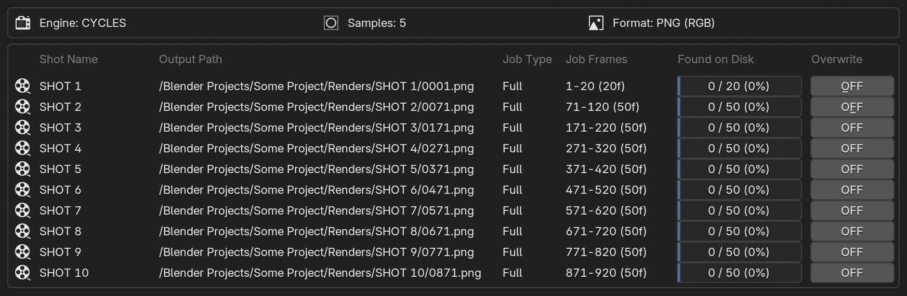
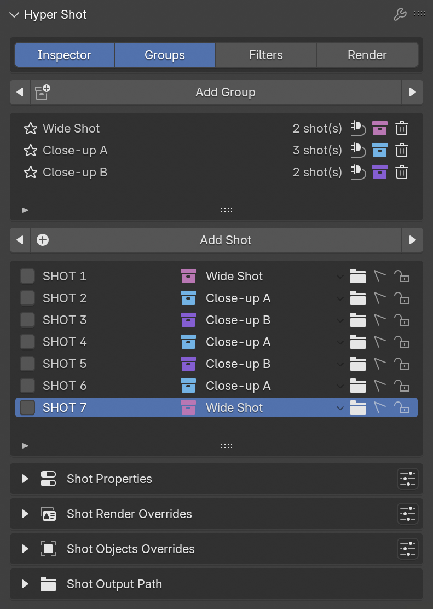

Hyper Shot is a scene state manager. It allows you to create Shots — smart presets that capture unique scene states: object visibility, active camera, output path, timeline range, and much more. Switch between shots on the fly or fire off a batch render — Hyper Shot instantly rebuilds your scene, saving you from repetitive manual setup.
Blender has no native concept of shot states. To manage different versions of a scene, you’re often forced to either maintain multiple .blend files or manually switch scene settings. Hyper Shot was created to bridge this gap.
Built for both Still Artists and Animators alike.
Still mode is perfect for lookdev, product design, and concept art. Create and manage multiple scene variations within a single .blend file. Save every "What if?" scenario and find the perfect look for your project.
Create a separate shot for every camera angle, lighting setup or object placements. Set up your entire "photoshoot" once and switch between shots in one click.
Hide off-camera elements to reduce hardware load, boost viewport FPS, and cut down render times. As you work, each Shot automatically saves the exact visibility state of all your objects and collections.
Select the desired shots, press the button, and the addon will render them sequentially, automatically applying all scene settings for each shot. Monitor the process via a clear visual queue, complete with a progress bar and real-time estimated time of arrival (ETA) for your Animation shots.

Before a render begins, Hyper Shot scans your output directories to provide a complete overview of already rendered frames. You retain absolute control: automatically skip existing frames to resume an interrupted job, or use the Overwrite toggle to intentionally re-render them. Review your task list and launch the batch with total confidence.
Fine-tune your scene composition by overriding object transformations on a per-shot basis. Easily adjust Location, Rotation, or Scale without creating complex keyframe animations—perfect for tweaking prop placements or layout variations for specific camera angles.
Need a different look for a specific shot? Assign custom materials to any object slot dynamically. Hyper Shot features a smart tracking system that ensures your overridden materials stay perfectly linked to the correct slot.
Assign any render parameters to individual shots. Render one shot in 4K at 2000 samples, and another one in 1080p at 500. The Custom Overrides system stores these specific settings and applies them automatically during batch rendering.
Eliminate manual timeline setup. When working with Animation shots, the add-on automatically configures timeline ranges, places Start and End markers, and creates customizable gaps between shots. As you work, adjust shot durations freely without ever overlapping adjacent shots.
Combine shots into Groups to share a unified visibility state, World and Master Camera. Update the visibility in one shot, and the changes instantly apply to the entire group. This drastically reduces setup time.

Track the production lifecycle of your shots using built-in status tags (Assets, Animation, Lighting, etc). Apply UI filters to hide completed work, declutter your list, and maintain focus on active tasks.
Clean. Simple. Powerful. I carefully refined the interface to be as minimal as possible. Hide the noise, save your screen space, and keep total control over your scene.
Save exactly what is visible, hidden, or excluded in each shot.
Jump between angles without manually changing the scene camera.
Give every shot its own lighting mood and environment setup.
Keep renders organized with shot-specific paths and variables.
Store resolution, samples, format, and custom render settings.
Save per-shot position, rotation, and scale without keyframes.
Try different looks while keeping material slots safely linked.
Remember animation ranges or pinned still frames per shot.
Return to the exact 3D View angle when you switch back.
Your feedback is a vital part of Hyper Shot's evolution. Whether you’ve encountered a technical issue or have a feature suggestion, I’m here to help. For any inquiries, feel free to reach out directly via email. I personally review every message to ensure the tool remains stable and powerful for everyone.